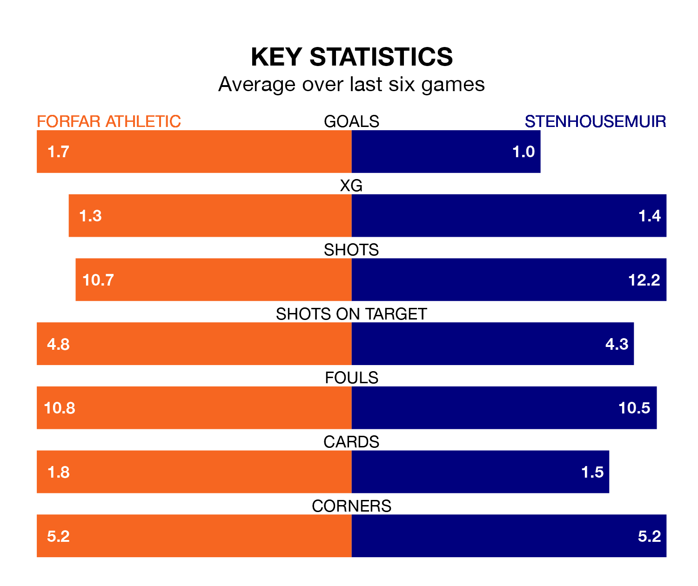

Two of League Two's meanest defences go head-to-head at Station Park on Saturday, when Stenhousemuir visit Forfar Athletic.
No teams have conceded fewer goals than Stenhousemuir to date: the away side have let in just 24 goals in 28 games.
The Loons have conceded 33 goals in 28 games, giving them the fourth tightest back line so far this season.
Key to the Warriors's home form has been Darren Jamieson, who has allowed 0.79 goals past him per 90 minutes, compared to 1.14 for Marc McCallum in the opposite net.
Stenhousemuir are top of the table after 28 games, of which they have won 18 and drawn seven, earning 61 points.
Forfar are five places behind the Warriors in sixth, with seven wins and 13 draws putting them on 34 points.
In Matthew Aitken, the away team have one of the league's most on-form strikers so far this season. He has notched 14 goals in 28 appearances, to sit second in the scoring charts.
His goal rate of one every 170 minutes is quicker than that of Stuart Morrison, Athletic's top scorer with a goal every 302 minutes, and a total of eight goals in 27 games.
In the last 10 years, Forfar and Stenhousemuir have played each other on 23 occasions. Forfar won 10 of them, Stenhousemuir seven, and they drew six times.
On average, the Loons scored 1.6 goals and the Warriors 1.1 in those matches.
Their last meeting was on January 6, when Stenhousemuir won 2-1 at home.
The Loons are in mixed form in League Two, with two wins and four draws from their last six games.
With two wins and three draws over that period, Stenhousemuir's form is slightly worse – they have taken nine points from 18, compared to the hosts' 10.
Forfar's last match was on March 9, a 2-1 win against Clyde, with Matty Allan and Rayan Mohammed getting the goals for the Loons.
Stenhousemuir drew 0-0 with Spartans last time out, also on March 9.
Updated: 15:10 (UTC), 15/03/24